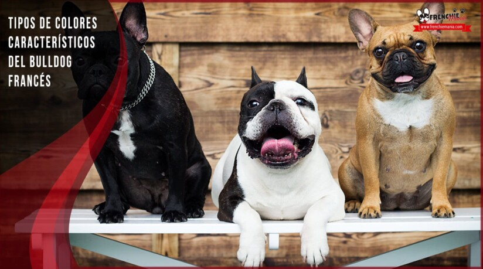

¿Estás pensando en adoptar o comprar un bulldog francés y tienes dudas con los colores de la raza?
¿No sabes qué colores son los más típicos en el bulldog francés? Seguro que si eres amante de esta raza,
te habrás dado cuenta de que han ido apareciendo colores más raros o menos frecuentes y por eso te preguntes
sobre el tema del color y que es lo normal. Sin duda los colores vaquita, negro y fawn siempre han sido los
colores estándar del bulldog francés, pero con el tiempo han ido apareciendo otros que cada vez están más de
moda como el gris, el gris azulado, el marrón chocolate…

Para conocer cuáles son los colores del bulldog francés, tenemos que remontarnos a su origen e historia,
ya que con el tiempo se han ido haciendo mezclas y cruces genéticos que han derivado en colores más extraños
o menos frecuentes, aunque ya están de moda. Cuando hablamos de los colores del bulldog francés a lo largo de
la historia, los clásicos siempre han sido el vaquita o blanco y negro y el atigrado, pero con el tiempo se han
ido volviendo más coloridos y especiales. Hoy puede que no te sorprendas tanto de ver bulldog francés gris, marrón
o gris, por eso vamos a ver qué colores de bulldog francés existen actualmente.
COLORES ESPECIALES
#1 Bulldog francés blanco
Los bulldog francés blancos tiene el pelo muy clarito, blanco, no color crema, ya que éste se considera otro color. En camadas de cachorros de bulldog francés con padres vaquita siempre puede nacer alguno completamente blanco. A veces son algo delicados con el tema de las alergias y siempre es bueno bañarlos con champús para perros de pelo blanco para mantener su pelaje limpio y brillante.
#2 Bulldog francés blue lilac
Los bulldog francés blue son como una mezcla de azul y gris muy original y que con el sol recuerda al color lila. También los llaman frenchies de ratón y su color puede variar de oscuro a plateado/azul claro. El color de los ojos de estos bulldog francés puede variar de azul claro a azul turquesa y plata. A estos colores mezclados con otros también se les conoce como bulldog francés lilac y se han puesto más de moda que nunca.
#3 Bulldog francés negro y marrón

Este otro color de bulldog francés en tono negro y marrón también podemos verlos cada vez más. Nos parece muy especial porque nos recuerda al pincher o al rotweiller y los colores son preciosos, además de las pequeñas marcas encima de los ojitos.
#4 Bulldog francés gris
El bulldog francés de color gris es muy parecido al lilac o blue, depende de los genes que sea más grisáceo y en la mayoría de los casos tienen los ojos claros en color amarillo, gris o azul. Los tonos al igual que en otros colores pueden variar.
#5 Bulldog francés chocolate
El bulldog francés de color marrón chocolate también es un color díficil de ver y creemos que está despareciendo. No es ni marrón, ni atigrado ni negro, sino como su color indica es un marrón rojizo muy diferente a los demás.
- Son exoticos
- Muy escasos
- Color base para los comvinados
#6 Bulldog francés merle
Y como no, hemos dejado para el final este último color de bulldog francés llamado merle, que aunque cada vez podemos ver más fotos de ellos en instagram, no hemos visto todavía ninguno en la calle. El bulldog francés merle o tricolor tiene un pelaje muy especial, llamativo y diferente a todos los demás, tiene pequeñas manchitas en todo su cuerpo de diferentes tonos como azul, marrón, gris. Su nombre “merle” del francés y significa “mirlo”, un pájaro con un color similar.
- Es como simona
- Ella es lilac and tan merle
- tiene 7 meses de edad